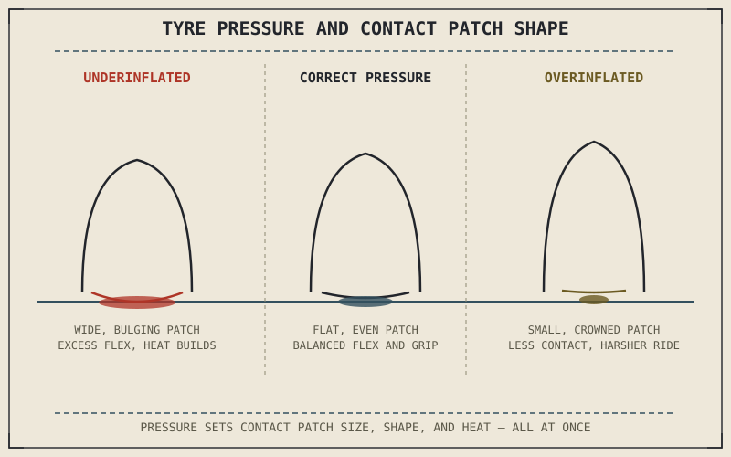

A few PSI in either direction is the single cheapest, fastest change anyone can make to how a motorcycle handles — and it's also the single most commonly neglected piece of maintenance on the entire machine. Everything this part has explained about contact patch size and shape, and everything it explained about the friction circle's total available grip, is quietly being scaled up or down by whatever number happens to be in the tyre right now.
Chapter 6.3 flagged pressure as a direct control on contact patch size, and Chapter 6.4 named it as one of the inputs setting total available grip. This chapter treats pressure as the standalone variable it actually is.
What Pressure Actually Controls
Air pressure inside the tyre resists the carcass flattening under load, which means pressure and contact patch size move in opposite directions for a given weight: higher pressure resists flattening and shrinks the contact patch, lower pressure allows more flattening and enlarges it. Pressure also controls how much the carcass itself flexes as the tyre rolls, which controls how much internal friction heat that flexing generates — a genuinely important factor at sustained speed, since a tyre's grip and durability both depend on staying within a reasonable temperature range rather than overheating.
Underinflation: More Contact, More Heat
Running a tyre below its recommended pressure enlarges the contact patch, which sounds like it should straightforwardly help grip — and briefly, in some conditions, it can. But underinflation also increases carcass flex on every single wheel rotation, and that repeated flexing generates heat that builds up faster than the tyre can shed it, especially at sustained highway speed. Excess heat degrades the rubber compound's actual grip and accelerates wear from the inside of the carcass, which is a slower, less visible kind of damage than a cut or puncture but no less serious. Underinflation also makes the tyre's sidewalls flex more under cornering load, making the bike feel vague and less precise exactly when the friction circle from Chapter 6.4 is being pushed hardest.
Tyre pressure isn't a maintenance chore to get right once — it's a live variable that's simultaneously setting contact patch size, heat buildup, and how precisely the bike responds to input, every single time the bike is ridden.

A tyre cross-section shown underinflated with excess flex and a wide, bulging contact patch, at correct pressure with a properly sized flat contact patch, and overinflated with reduced flex and a small, crowned contact patch.
Overinflation: Less Contact, Harsher Ride
Running a tyre above its recommended pressure produces the opposite problem. The carcass resists flattening so effectively that the contact patch shrinks and can crown — meaning the tyre's center bulges slightly more than its shoulders, concentrating contact into a narrower strip down the middle rather than spreading it evenly across the tread's full width. Less contact area, in most conditions, means less available grip, and the reduced carcass flex that comes with overinflation also transmits more small-bump harshness directly to the chassis, since the tyre itself is no longer absorbing as much of that shock the way Chapter 6.1 described it doing. Overinflation doesn't run as hot as underinflation, but it gives up grip and comfort to get there.
A Common Misconception, Cleared Up Early
It's tempting to think of "correct pressure" as a single fixed number stamped on the tyre or in the owner's manual, checked once and forgotten. Real correct pressure shifts with load — a passenger and luggage typically call for higher rear pressure than solo riding does — and with ambient temperature, since air pressure itself rises and falls with heat. A pressure that was correct on a cool morning solo ride can be meaningfully wrong once the day warms up and a passenger climbs on, which is exactly why manufacturers publish separate solo and two-up pressure figures rather than one universal number.
Where This Leads
Pressure sets the conditions the contact patch operates under, but the tread pattern and rubber compound actually meeting the road are their own separate variables. Chapter 6.6 turns to those next — how tread design channels water and debris, and how different compounds trade outright grip against durability.
Key Concepts to Remember
- Tyre pressure controls contact patch size and carcass flex simultaneously — higher pressure shrinks the patch and reduces flex, lower pressure enlarges the patch and increases flex.
- Underinflation builds excess heat from repeated carcass flexing, degrading grip and accelerating wear even though the enlarged contact patch initially seems beneficial.
- Overinflation shrinks and crowns the contact patch, generally reducing available grip and transmitting more harshness to the chassis.
- Correct pressure changes with load and temperature, which is why manufacturers publish separate solo and two-up figures rather than one fixed number.
Cross-References
| ← Ch. 6.3 | Flagged pressure as a direct control on contact patch size; this chapter explains that relationship in full, including its effects on heat and handling. |
| ← Ch. 6.4 | Named pressure as one of the inputs setting total available grip within the friction circle; this chapter treats pressure as its own standalone variable. |
| ← Ch. 6.1 | Named shock absorption as one of a tyre's three jobs; this chapter shows overinflation directly undermining that job. |
| → Ch. 6.6 | Covers tread patterns and rubber compounds as the next variable shaping what the contact patch can actually do. |